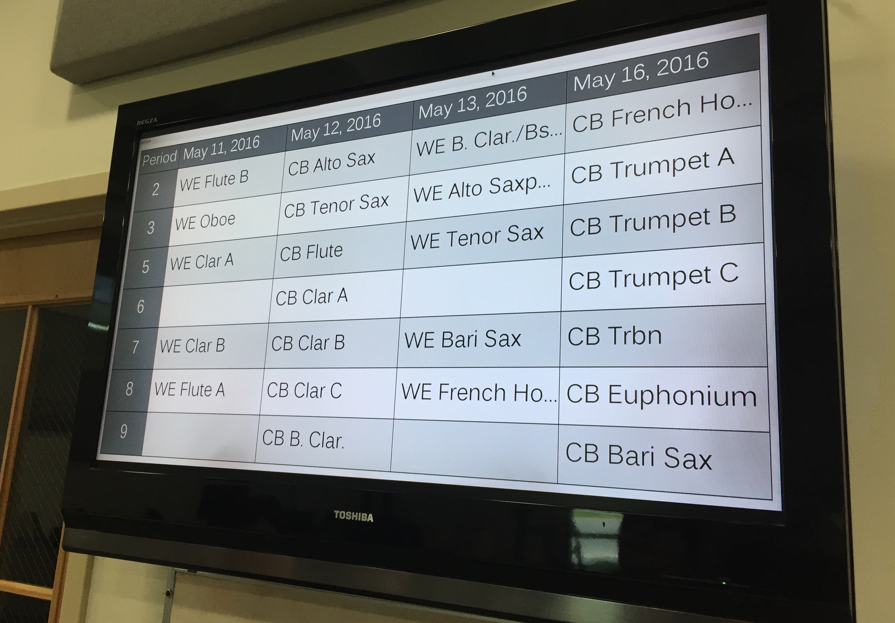
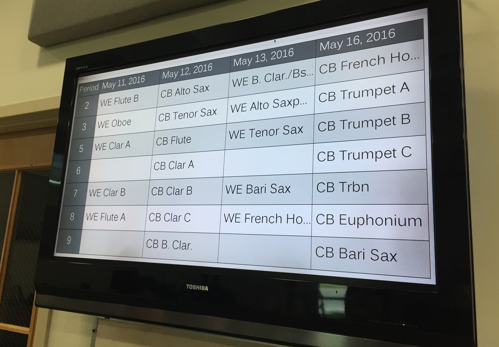

I'm Mark!
I recently graduated from the University of Massachusetts Amherst with a degree in Computer Science.
I currently work at Liberty Mutual doing web development with React.
On my own time, I do a lot of iOS work with Objective-C and Swift.
Most of my UI work is done with Sketch.
You can check out the projects that I've worked on down below.
Feb 2015 - Oct 2020
A calculator app with a twist that gives the user the opportunity to design their own calculator interface. The user can assign specific functions and colors to buttons as well as resize and reposition them. The app has support for multiple layouts, a light and dark theme, user-defined constants, an in-depth math parser, and much more.


Sep 2015 - Jun 2016
The Band Room Automated INformation Display is an application created in Java for the purpose of displaying music lesson schedules for my high school band. It was designed to replace the antiquated whiteboard schedule which needed to be tediously redrawn every week. The “BRAIN” pulls from a lesson schedule data file, parses that input, and displays the next four days of lessons on the UI. Every night at midnight, the program will pull the next four days and update the UI accordingly. The assistant band director helps to maintain the BRAIN Display since my graduation.
 

School Run
Feb 2016 - May 2016
School Run is a 3D game made in the Unity3D game engine. This project served as my high school Senior Year Project. I self-taught some 3D game design concepts and learned a bit of C# to program the game. School Run is an endless running game, but the catch is that it takes place inside my high school. Using reference pictures, I modeled the interior halls of most of the school with real textures, as well as obstacles that could occasionally be found in the hallways. I was asked to demo the final project at the senior project fair in May of 2016.
Scouting
July 2015 - Present
A scouting tool that can be used for FIRST robotics competitions. The app allows the user to create a scouting sheet with fields/entries that a team may find useful when trying to build an alliance. The scouting sheet can be updated with new fields/entries if necessary. The data that is collected during a competition can be searched to narrow down a list of teams to teams that match certain qualifications. You can even customize the accent color of the app to match your team color. This project is incomplete at the moment.


Nov 2014 - Jan 2017
An organized collection of math calculators in the form of an iOS app. I wrote a library of functions for evaluating math formulas for high school math. The user can provide their input into a well-designed UI and see all the steps from the input to the final answer.